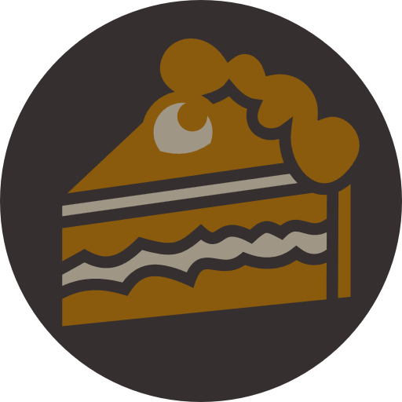

BAKEND
¿Quiénes somos?
En Bakend, fusionamos la pasión por la pastelería con el amor por la tecnología. Fundada por un grupo de desarrolladores con alma de reposteros, nuestra misión es endulzar el mundo byte a byte.

Marcmoy
Convierte píxeles en postres con una precisión milimétrica. Su especialidad: tartas que se adaptan a cualquier pantalla

Pgardel
Constructor de pasteles escalables. Codifica capas de sabor como si fueran componentes reutilizables. Su debilidad: el pan de masa madre modular.

Egarveg
DevOps del horno. Automatiza recetas, despliega dulces y monitoriza temperaturas como si fueran logs.